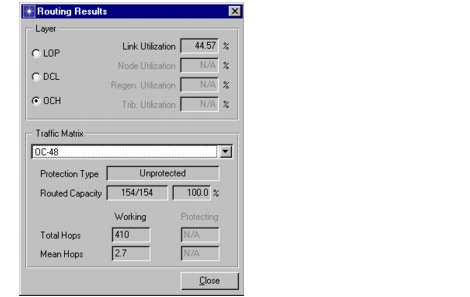
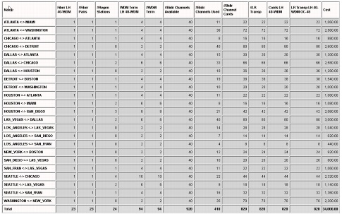

Optical Network Architectures > Opaque Mode
Opaque Mode
Procedure 5-1 Opaque Mode
- Open the WDMGuru_Tutorial_Transparent_Routing project.
- Select File > Open....
- Select the WDMGuru_Tutorial_Transparent_Routing project, then press Open.
The opaque scenario appears in the workspace.
This project contains two scenarios. In this scenario, the OCH layer mode is opaque, which means that all nodes are opaque. This can be verified in the Network > Network Properties... dialog box.
- Route the traffic matrix OC-48.
- Select Design > Route DCL/OCH Traffic...
The Route DCL/OCH Traffic dialog box appears.
- Select the OCH Layer and the traffic matrix OC-48.
- Choose the default settings for all options, as follows:
- Press Route.
The Routing Results dialog indicates that the traffic matrix OC-48 is entirely accommodated in the network.

- Close the Routing Results and the Route DCL/OCH Traffic dialog boxes.
- Check the installed transponders in the network.
- Select Info > Export to Web Report > Bill of Materials.
The web browser is launched and the bill of materials report appears.
- Select Transponder.
This table shows the number of short-reach transponders. These transponders are needed at the tributary side of the OXCs in the network (interfacing with client equipment). In this example, 308 short-reach transponders are installed in the network.
- Select WDM Terminal Equipment.
This section shows the number of long-reach transponders (per bit rate and per line system type) which terminate the line system channels. In this example, 820 long-reach transponders are installed in the network.

- Close the Bill-Of-Materials file.
End of Procedure 5-1
| Home © 1987-2007 OPNET Technologies, Inc. All Rights Reserved. This software may be covered by one or more U.S. Patents. See complete patent notice in the Legal Notices section. OPNET Support Center |